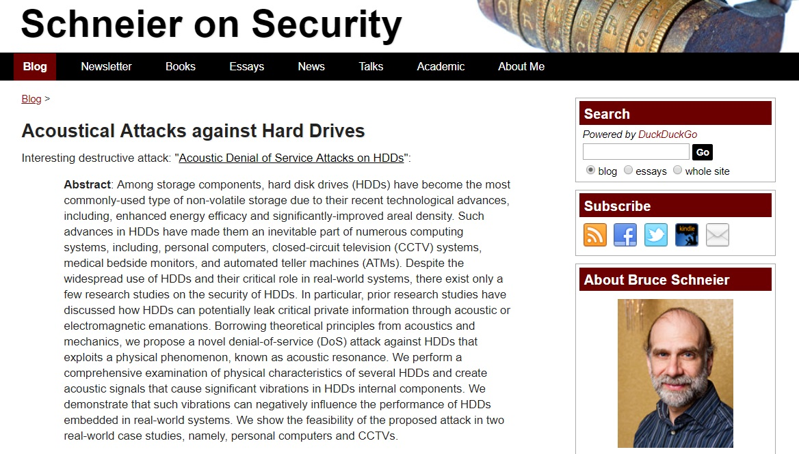
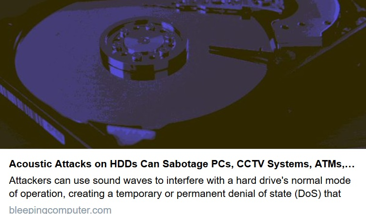
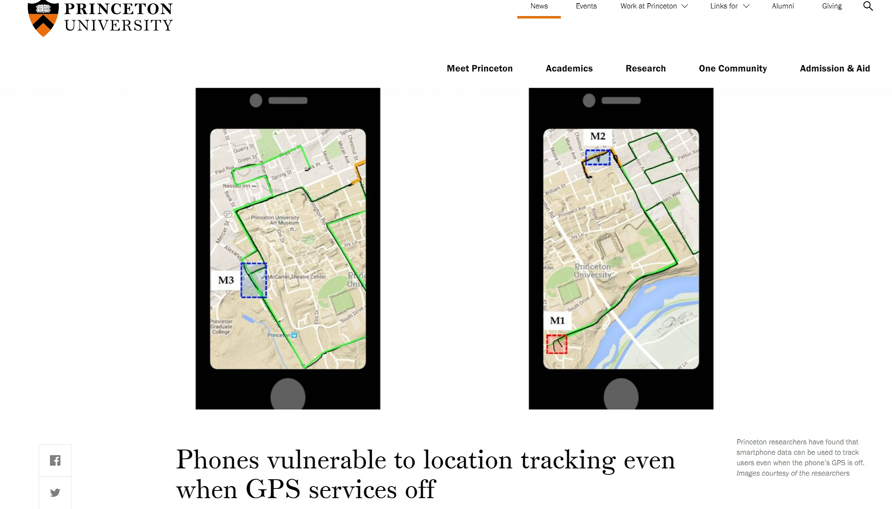
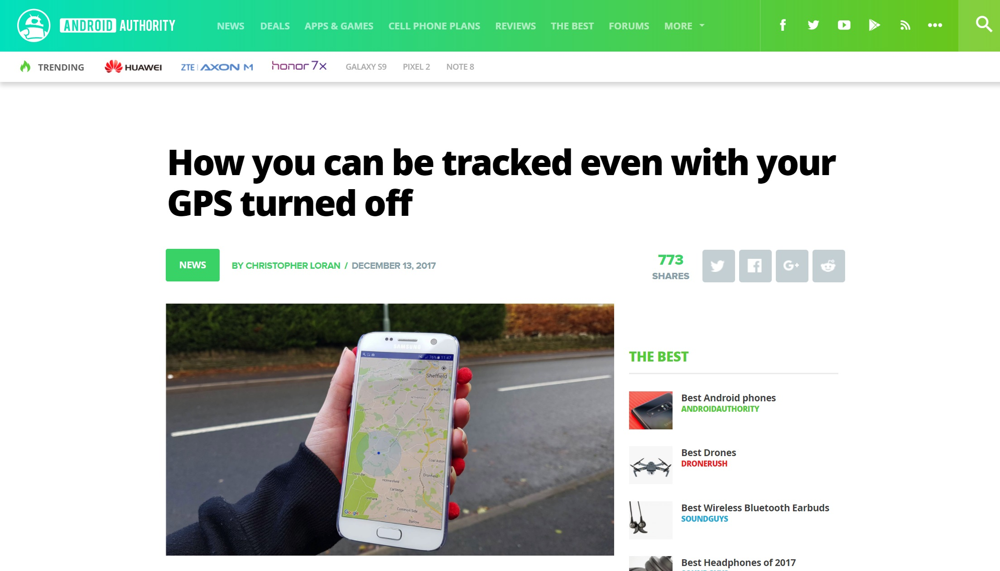
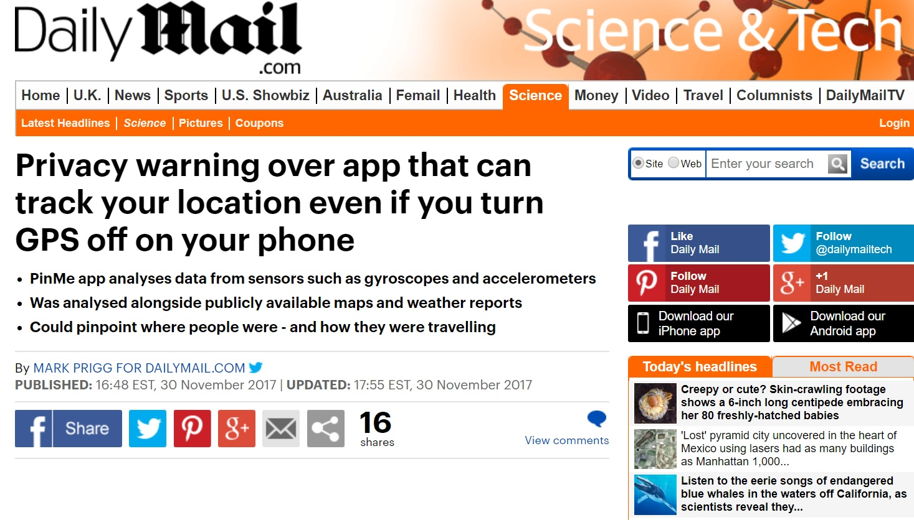
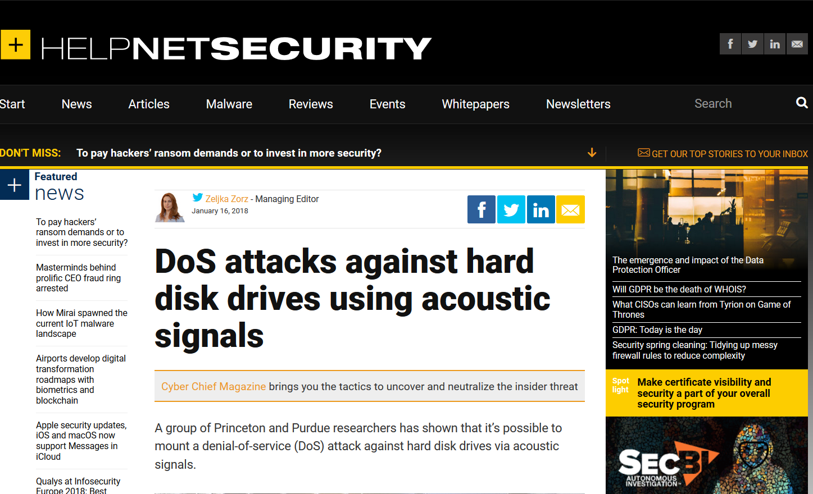

Home
Education
Publications
Awards
Press Coverage
Talks
Teaching
Services
☰
Arsalan Mosenia
Postdoctoral Researcher
[Curriculum Vitae]
Last Update: Apr. 2018
Selected Press Converage






Coverage on other news outlets:
[ACM TechNews]
,
[ZDNet Germany]
,
[The Register, UK]
,
[Gizmodo]
,
[Slashdot]
,
[PC Risk]
,
[Cyware]
,
[Black Lake Security]
,
[Board Town Blast],
[Securtiy Online],
[The Cybersecurity Place]
,
[Mosaic Security]
,
[Cyber News]
,
[Beebom]
,
[Sec News 24]
,
[Threat Brief]
,
[Hack Read]
,
[Hot for Security]
,
[Bleeping Computer]
,
[WCCFTech]
,
[Naked Security]
, and
[Security Ledger]